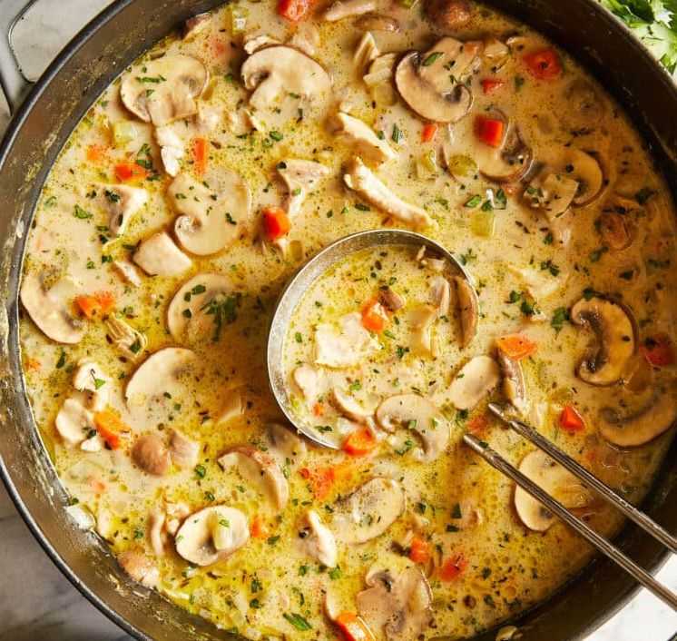

Ingredients
8 ounces boneless, skinless chicken thighs, cut into 1-inch chunks
Kosher salt and freshly ground black pepper, to taste
2 tablespoons unsalted butter
8 ounces cremini mushrooms, thinly sliced
1 onion, diced
3 carrots, peeled and diced
2 ribs celery, diced
3 cloves garlic, minced
½ teaspoon dried thyme
¼ cup all-purpose flour
4 cups chicken stock
1 bay leaf
2 tablespoons chopped fresh parsley leaves
How to cook?
- Season chicken thighs with salt and pepper to taste
- Heat olive oil in a large stockpot or Dutch oven over medium heat
- Add chicken to the stockpot and cook until golden about 2-3 minutes and set aside
- Melt butter in the stockpot or Dutch oven over medium heat
- Add mushrooms, onion, carrots and celery and cook stirring occasionally until tender (about 3-4 minutes)
- Stir in garlic and thyme until fragrant, about 1 minute
- Whisk in flour until lightly browned, about 1 minute
- Stir in chicken stock bay leaf and chicken and cook stirring constantly until slightly thickened (about 4-5 minutes)
- Stir in half and half until heated through (about 1-2 minutes)
- Season with salt and pepper to taste
- If the soup is too thick add more half and half as needed until desired consistency is reached
- Serve with parsley if you like
This you should have when you are done

Also check out our other recipes on the home page!
Home page with other cool recipes